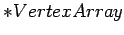
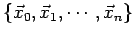
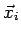
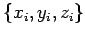
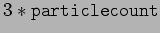

Nächste Seite: get_surfacegrid Aufwärts: Public member von Fluid Vorherige Seite: particlecount Inhalt
void Fluid::get_particlearray(float ** VertexArray, unsigned long & arraylength)
Liefert die Positionen aller Partikel. Die ersten movingparticlecount() Koordinaten sind Flüssigkeitspartikel, die boundaryparticlecount() folgenden sind Koordinaten von Kontrollpartikeln.
 |
 |
||
 |
 |

reserviert.